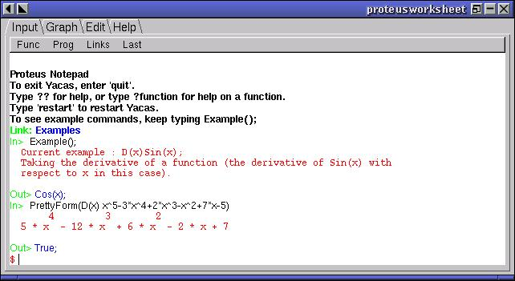

1.3. ¿Qué es YACAS?
YACAS es un acrónimo de Yet Another Computer Algebra System.
YACAS no es en sí un software científico, en realidad es un lenguaje, y aunque se distribuye con un conjunto de funciones matemáticas su verdadera potencia reside en su lenguaje, mediante el cual se pueden escribir nuestras propias funciones para la realización tanto de cálculos numéricos como simbólicos.
YACAS posee un mecanismo de "plugins" que permite la carga dinámica de librerias externas a YACAS. Mediante este mecanismo podemos ampliar las funcionalidades de YACAS.
Podemos utilizar YACAS de varias formas:
De forma gráfica:

En modo consola:

Utilizando scripting.